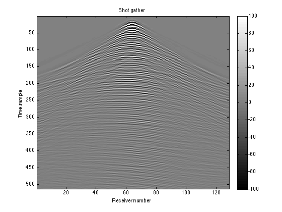
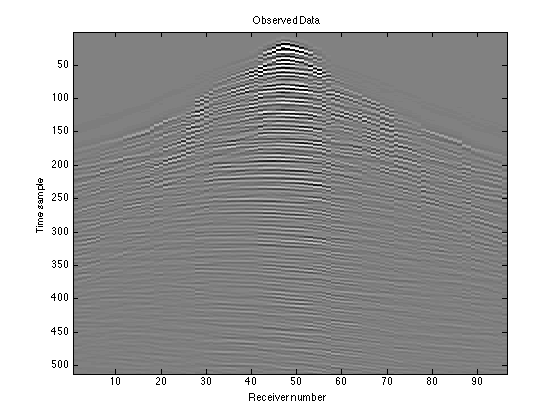
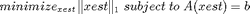
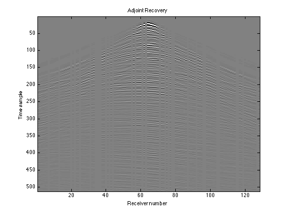
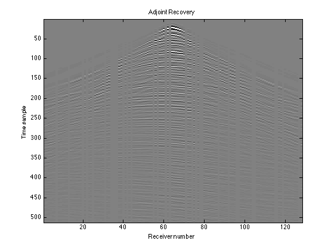

Interpolating Seismic Data
In reflection seismology, sound waves are sent into the ground using an energy source such as dynamite or vibrator trucks. These waves are reflected off of, and transmitted through, different rock layers. The reflections are recorded at the surface via receivers called geophones that are planted in the ground. The recorded data set is an ensemble of seismic traces (time series from the different receivers). These help create an image of the subsurface, which is then interpreted for oil and gas exploration.
(Image from http://lingo.cast.uark.edu/LINGOPUBLIC/natgas/search/index.htm)
These days, seismic data is collected as massive data volumes with up to five dimensions (one for time, two for the receiver positions, two for the source positions). This data shows a 3D volume of the Earth. In our example, we work with 2D seismic data, i.e., data showing a single slice of the Earth. It is set up as a three-dimensional matrix - one coordinate for time, one for the receivers, and one for the sources. Furthermore, we will work with only one shot gather (the data from a single source), which is a function of receiver index and time sample.
Seismic data are often spatially undersampled due to physical and budget constraints, resulting in missing traces (receiver positions) in the acquired data. A solution to this problem is trace interpolation, which estimates the missing traces from an undersampled dataset. The data used in this example is fully sampled, so we will first simulate the effect of missing traces by removing the data from random receiver indices. We will then interpolate to try to fill in the gaps. In the Sparse Recovery example, our data was already sparse, but in this example it isn't. We have to transform the data to a domain where it has a sparse representation (for example, the Fourier or curvelet domain), and then solve an optimization problem to recover the signal. Spot operators will come in handy both in the "sampling" to remove receivers and in the sparsifying transform. Since such a large quantity of data is gathered in seismic imaging, Spot operators are much more efficient than explicit matrices.
Contents
Loading the Seismic Data
Our data matrix consists of 512 time samples, 128 receivers, and 128 sources.
close all; load 'GulfOfSuez128.mat'; nt = size(D,1); % Number of time samples nr = size(D,2); % Number of receiver indices ns = size(D,3); % Number of source indices
Now we need to select a "shot gather", or single source index, so that we can work with one slice of the data. We'll select source index 64:
D = squeeze(D(:, :, 64));
Plot the data. This data is the "truth": what we see with no receivers missing.
figure(1); imagesc(D); colormap(gray); colorbar; title('Shot gather'); caxis([-100 100]) xlabel('Receiver number'); ylabel('Time sample')
You can see that now it's a function of receiver number and time sample. Each column in the matrix is the data from a single receiver. The figure shows some of the typical events seen on a seismic shot gather. The faint near-horizontal lines are reflection events, resulting from the waves reflecting off the different layers in the subsurface. The sharper, steeper lines represent another type of event that we aren't interested in.
Creating the Sampling Operator (R)
To ensure repeatability, we'll seed the random number generator:
rng(123456789);
Choose a subsampling factor; we'll choose 0.75, meaning that 25% of the receivers will be deleted:
p = 0.75;
Create a random permutation of the receiver indices, and choose of them to use as the remaining receivers. In a real world situation, we would know the positions that we had placed receivers in, so the entries in this vector would not be random.
idx = randperm(nr); idx = sort(idx(1:round(nr*p)));
Now create the sampling operator R, which we will use to zero out the missing receiver data. opRestriction(nr, idx) creates an operator that, when applied to a vector of length nr, selects the values at indices given by idx. opDirac(nt) creates an ntxnt identity operator. The Kronecker product of these two produces a new large operator:
R = opKron(opRestriction(nr, idx), opDirac(nt))
R =
Spot operator: Kron(Restriction(96,128),Dirac(512,512))
rows: 49152 complex: no
cols: 65536 type: Kron
This operator R represents a matrix like the following, where is an ntxnt identity matrix, represents an ntxnt block of zeros, and the positions of each are determined by idx; in this case, idx would be [2,4,5,6].
The operator has nr column blocks and length(idx) row blocks. When a row block of the operator multiplies the vectorized D, the identity matrix selects the set of nt time samples from a particular receiver. In this way, each row block selects a receiver to include in the new data set. Continuing the above example, the receivers 2, 4, 5, and 6 would be included, and the receivers 1 and 3 would be left out.
We can test out our operator using the dot-product test (type help dottest for more information):
spot.utils.dottest(R, 1, 'verbose');
Performing dot test on operator: Kron(Restriction(96,128),Dirac(512,512)) PASSED!
Simulating the Observed Data
We can take out the columns with missing receivers by applying our sampling operator R to the vectorized D:
RD = R*D(:);
The resulting matrix RD will have nt rows, just as D did, but only length(idx) columns, the number of receivers that we actually have data from. This is what the data we gather would actually look like:
RD = reshape(RD, nt, length(idx)); figure(2); imagesc(RD); colormap(gray); title('Observed Data'); caxis([-100 100]) xlabel('Receiver number'); ylabel('Time sample')
Leaving Zero Gaps for Missing Receivers
The matrix RD does not account for the missing receivers at all; you can see discontinuities in the curves where there is data missing. To instead leave zero gaps in the appropriate places, we can apply the adjoint of our sampling operator, R'. Since R deleted certain columns, R' will re-insert those columns, but missing the data. We will then have nr columns again instead of length(idx) columns.
Dest_adj = reshape(R'*RD(:), nt, nr); figure(3); imagesc(Dest_adj); colormap(gray); title('Adjoint Recovery'); caxis([-100 100]) xlabel('Receiver number'); ylabel('Time sample')

This is a recovery in a sense because we can see the shape of the data, but it does not fill in the gaps to tell us what the missing receiver data should look like. That's the next step.
Creating the Measurement Operator (A)
Let's fill in the gaps in our data using interpolation. In the Sparse Recovery example, we created a "spike train" signal that was already sparse in the time domain. In this example, our data is not sparse in the space-time domain, so we need to transform it into a domain where it does have a sparse representation. Seismic data is known to have sparse representations in both the Fourier and curvelet domains. We will use the Fourier transform as our "sparse basis". Spot's opDFT2 creates a 2D fast Fourier transform operator:
F = opDFT2(nt, nr);
As in the Sparse Recovery example, we'll set up an equation of the form and then solve for the best estimate of . is the vectorized version of our observed data, which is simply the sampling operator R multiplied by the true data. We already defined this as RD:
b = RD(:);
is the sparse representation of our signal, in other words, the Fourier transform of the true data. This is what we are solving for. is our "measurement operator". In order to satisfy the equation , must first apply an inverse Fourier transform to , and then delete the missing receiver data. We can create simply by multiplying these two procedures together:
A = R*F'
A =
Spot operator: Kron(Restriction(96,128),Dirac(512,512)) * DFT2(65536,65536)'
rows: 49152 complex: yes
cols: 65536 type: FoG
Test the measurement operator using the dot-product test again:
spot.utils.dottest(A, 1, 'verbose');
Performing dot test on operator: Kron(Restriction(96,128),Dirac(512,512)) * DFT2(65536,65536)' PASSED!
Solving the 1-Norm Recovery Problem
Now that we have our system , we can solve for x using the SPGL1 solver. To find the best estimate (or recovery) of x, we will solve the following basis pursuit problem for xest:

We do not solve the basis pursuit denoising problem that we solved in the Sparse Recovery example because no noise has been added in the sampling process; we want exactly. However, we still minimize the 1-norm of xest to get the sparsest solution.
Let's set our 'optimality tolerance' to 0.0001 and the number of iterations to perform to 200:
options = spgSetParms('optTol', 5e-3, 'bpTol', 5e-3, ... 'iterations', 200, 'verbosity', 1);
Now we pass our A, b, and options to the SPGL1 solver's spg_bp ("basis pursuit") function:
xest = spg_bp(A, b, options);
================================================================================
SPGL1 v. 1017 (Mon, 16 Jun 2008)
================================================================================
No. rows : 49152 No. columns : 65536
Initial tau : 0.00e+00 Two-norm of b : 4.26e+03
Optimality tol : 5.00e-03 Target objective : 0.00e+00
Basis pursuit tol : 5.00e-03 Maximum iterations : 200
Iter Objective Relative Gap Rel Error gNorm stepG nnzX nnzG tau
0 4.2560378e+03 0.0000000e+00 1.00e+00 2.049e+02 0.0 0 0 8.8407045e+04
6 2.7975048e+03 1.2976820e-01 1.00e+00 3.737e+01 0.0 3344 0 2.9780298e+05
17 9.2668688e+02 3.8099035e-01 1.00e+00 7.533e+00 -0.6 13564 0 4.1180480e+05
44 1.3178171e+02 9.6664593e-01 1.00e+00 8.175e-01 0.0 22173 3869 4.3304783e+05
80 1.8233962e+01 2.6134040e+01 1.00e+00 8.919e-02 -0.9 38631 25149 4.3677560e+05
99 2.6817845e+00 2.0787876e+02 1.00e+00 1.252e-02 -0.9 48653 41461 4.3734992e+05
176 3.6212715e-01 2.3277839e+02 3.62e-01 1.980e-03 -0.6 50402 42742 4.3741614e+05
198 9.6563793e-02 1.0262370e+02 9.66e-02 6.206e-04 -0.6 50637 42937 4.3743117e+05
200 3.6901000e-02 7.4490217e+00 3.69e-02 1.626e-04 0.0 50665 42981
ERROR EXIT -- Too many iterations
Products with A : 326 Total time (secs) : 62.8
Products with A' : 202 Project time (secs) : 3.9
Newton iterations : 8 Mat-vec time (secs) : 54.7
Line search its : 124 Subspace iterations : 0
Recovering the Data
xest is the solution to our basis pursuit problem, but it is still in the Fourier domain, so we have to transform it back to the time-space domain using an inverse Fourier transform:
dest = F'*xest;
We can then reshape our data into a matrix. It still has nt rows (time samples), but unlike the observed data, has nr columns (receiver indices):
Dest = reshape(dest, nt, nr);
To determine the accuracy of our recovery we can compute the residual Ddiff and the signal-to-noise ratio SNR:
Ddiff = D - Dest; SNR = -20*log10(norm(Ddiff(:))/norm(D(:)))
SNR = 8.489312607535759
Plotting the Results
To visualize how accurate our recovery is, plot the true data, observed data, adjoint recovery (from "Leaving Zero Gaps for Missing Receivers"), basis pursuit recovery, and residual:
figure(4); imagesc(D); colormap(gray); title('Truth'); caxis([-2e2 2e2]); xlabel('Receiver number'); ylabel('Time sample') figure(5); imagesc(RD); colormap(gray); title('Observed data'); caxis([-2e2 2e2]); xlabel('Receiver number'); ylabel('Time sample') figure(6); imagesc(Dest_adj); colormap(gray); title('Adjoint Recovery'); caxis([-2e2 2e2]); xlabel('Receiver number'); ylabel('Time sample') figure(7); imagesc(real(Dest)); colormap(gray); title('Basis Pursuit Recovery'); caxis([-2e2 2e2]); xlabel('Receiver number'); ylabel('Time sample') figure(8); imagesc(real(Ddiff)); colormap(gray); title('Residual'); caxis([-2e2 2e2]); xlabel('Receiver number'); ylabel('Time sample')
 
